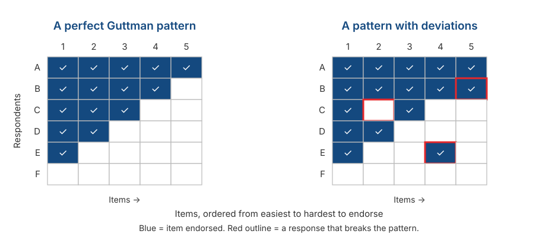

Response Formats I: Likert, Semantic Differential, and Guttman
Psychological Scale Construction
2026-09-02
Outline
- What we are actually choosing when we choose a response format
- Likert: where it came from, and the four decisions you have to make
- Semantic Differential: when adjective pairs work better than statements
- Guttman: when items really are ordered by logic — and why it rarely works
- Comparing the three
- The closing question: which assumptions does a response format change?
From a model to the first real decision
Where we are
Session 3 gave us the model: \(X = T + E\), the latent variable as a cause, and reliability as a proportion of variance.
So far all of it has been abstract. Today the model touches a decision you will actually make.
Response format is the first place measurement theory turns into something visible on a questionnaire.
What to hold on to today
A response format is not a matter of taste or habit. Each format carries its own package of assumptions, and that package determines which analyses you may later use.
What a response format does
A response format is a rule that maps a respondent’s internal state onto a number.
Most items have two parts: a stem (a statement or question) and a set of response options.
What you choose is not just the appearance, but:
- how much information one item can yield,
- the level of measurement you are claiming,
- which kinds of error become possible,
- and which analyses can be defended.
Likert
Where it came from
Introduced by Rensis Likert (1932) in his dissertation, A technique for the measurement of attitudes.
The core idea is not the “Strongly Disagree to Strongly Agree” options, but summated ratings: a set of items answered on a graded scale and then added together into one score.
So what Likert called a “scale” is the set of items, not the response options.
A precision most people skip
A single item with five options is not a “Likert scale”. It is a Likert-type item.
A Likert scale exists only when items are summed. Note that this is consistent with Session 3: reliability can only be computed for a set of items.
Anatomy of a Likert-type item
Stem: “I feel nervous when I have to speak in front of the class.”
| 1 | 2 | 3 | 4 | 5 |
|---|---|---|---|---|
| Strongly Disagree | Disagree | Neutral | Agree | Strongly Agree |
- Stem — the statement being responded to.
- Number of points — five here.
- Anchors — the words describing each point.
- Direction — negative to positive, or the reverse.
All four are decisions. Let us take them one at a time.
Decision 1: how many points?
- Four points or fewer compresses variation between respondents and lowers precision.
- Preston & Colman (2000) found 2-, 3-, and 4-point scales all performed poorly.
- Around 5–7 points is the range most often recommended.
- Lozano et al. (2008) recommend a range of 4 to 7, with scarce gains beyond 7.
- Above 6–7 points, the added benefit is small.
- Simms et al. (2019) found almost no psychometric improvement beyond 6 options.
Two further considerations from DeVellis
First, whether respondents can actually discriminate. If they cannot tell seven levels apart, seven points only add noise.
Second, whether you will use that precision. If you are going to collapse the scores into three categories anyway, why ask for ten points of resolution?
Decision 2: midpoint or no midpoint?
Odd number
Allows neutrality or uncertainty.
Appropriate when a neutral position is theoretically meaningful.
Even number
Forces respondents to take a side, however weakly.
Appropriate when you suspect the midpoint will be used to avoid choosing.
Neither is automatically better
DeVellis states this plainly: neither format is inherently superior. It depends on the type of question, the type of response option, and your purpose.
The problem with midpoints
If every item has a midpoint, some respondents will learn they can always choose it and finish faster.
The midpoint becomes the safe, lowest-effort option — not a report of their state.
Krosnick (1991) calls this satisficing: giving an answer that is good enough rather than the most accurate one.
Something you can check yourself
When a midpoint is available it is often the most frequently chosen option. If that happens in your pilot data in Session 12, do not immediately conclude your respondents are genuinely neutral.
“Neutral” and “undecided” are not the same thing
Many questionnaires label the midpoint “Neutral”, “Undecided”, or “Slightly Disagree”, as though the three meant the same thing.
“Neutral” means not leaning either way. “Undecided” means not knowing or not yet sure. “Slightly Disagree” already leans toward the disagree side.
The three sit at different places on the continuum, but all receive the same number: 3.
Why this is not a small matter
This violates the equal-interval assumption from Session 2. If “Slightly Disagree” is used as the midpoint, the scale is no longer symmetric: the distance from 2 to 3 is not the same as the distance from 3 to 4.
Decision 3: label every point, or only the ends?
Labelling every point generally yields better reliability and validity than labelling only the endpoints (Krosnick et al., 2010).
The reason is simple: if only the ends are labelled, each respondent decides for themselves what the points in between mean.
But the labels you choose have to be genuinely distinguishable.
An example of problematic labels
Consider this arrangement, from DeVellis:
| Very Helpful | Not Very Helpful |
| Somewhat Helpful | Not at All Helpful |
Two problems at once. First, “somewhat” and “not very” are hard to tell apart under the best of circumstances. Second, reading down the columns makes “Somewhat Helpful” look higher than “Not Very Helpful”; reading across the rows reverses that ordering.
Decision 4: which anchors?
Agreement — “Strongly Disagree” to “Strongly Agree”. The most common, and the most vulnerable to acquiescence (Session 2).
Frequency — “Never” to “Always”. More concrete, but it needs an explicit time referent: “often” within a week, or within a year?
Item-specific anchors — for example “How often do you feel nervous before a presentation?” with “Never / Once or twice / Several times / Almost every time / Always”.
A tendency worth knowing
Agreement anchors invite respondents simply to agree. Weijters et al. (2010) reinforce this point, showing that scale format itself shapes which response styles appear.
How strongly should the stem be worded?
Three versions of the same content, at different strengths:
- “Lecturers generally ignore what students say.” — strong
- “Sometimes lecturers do not pay as much attention to students’ comments as they should.” — moderate
- “Once in a while a lecturer might forget or miss something a student has said.” — weak
DeVellis’s advice
For a Likert format, statements should be fairly strong but not extreme. The reason: degree is already expressed by the response options.
If the sentence itself is very mild (version 3), almost everyone will agree, and the item stops distinguishing anyone. Recall the discussion of item difficulty in Session 3.
Semantic Differential
The format
Developed by Osgood, Suci, & Tannenbaum (1957) in research on meaning and attitudes.
Object being rated: The Faculty Student Services Office
| 1 | 2 | 3 | 4 | 5 | 6 | 7 | ||
|---|---|---|---|---|---|---|---|---|
| Slow | ○ | ○ | ○ | ○ | ○ | ○ | ○ | Fast |
| Convoluted | ○ | ○ | ○ | ○ | ○ | ○ | ○ | Straightforward |
| Unfriendly | ○ | ○ | ○ | ○ | ○ | ○ | ○ | Friendly |
The respondent marks one point between a pair of opposing adjectives.
Bipolar and unipolar pairs
Bipolar pairs
Two opposite adjectives.
honest — dishonest friendly — hostile
Unipolar pairs
The presence and absence of one attribute.
friendly — not friendly
Choosing between them is a matter of the logic of your construct, not of style.
“Not friendly” is not necessarily the same as “hostile”. Treating them as one continuum is already a theoretical claim.
When this format is useful
When you are measuring an attitude or impression toward an object — a service, a product, a programme, a group, a public figure.
When you want to compare several objects on the same dimensions.
When reading load must be kept low: adjective pairs are far lighter than rows of long sentences.
Still compatible with the Session 3 model
Several adjective pairs tapping the same thing — honest/dishonest, fair/unfair, truthful/untruthful — can be summed into a single “honesty” score.
The logic is identical: one latent variable as the common cause, the items as its indicators.
What to watch out for
The pair must be genuinely opposite in the respondent’s language. Pairs that feel neatly opposed in English often have no clean counterpart in another language.
The midpoint is ambiguous. Does point 4 mean “neutral”, “both at once”, or “I don’t know”?
Invariance risk (Session 2): an adjective pair can carry different meanings across groups, so the scores are not directly comparable.
If your group uses this format
Test your adjective pairs on a few prospective respondents before the pilot. Ask one simple question: “What would you say is the opposite of this word?” If the answer is not the word you paired it with, the pair needs replacing.
Guttman
The cumulative idea
Guttman (1944) proposed a scale whose items are ordered: endorsing one item implies endorsing every “easier” one.
A person’s level is indicated by the hardest item they still endorse.
A clean example from DeVellis: “Do you smoke?” → “Do you smoke more than 10 cigarettes a day?” → “Do you smoke more than a pack a day?”
Note
Note the contrast with Likert. In Likert we sum degrees of agreement across all items. In Guttman we look for the point of transition from “yes” to “no”.
What the pattern looks like

Reading that pattern
In a perfect pattern, the total score tells you exactly which items were endorsed. Nothing is lost by summarising it as a single number.
In the right-hand panel, three respondents deviate: they endorse a harder item while rejecting an easier one.
The more deviations, the less the total score means. The usual index for this is the coefficient of reproducibility.
Where Guttman works
When the hierarchy is a logical necessity: eating ten bowls of bakso (Indonesian meatball soup) is always more than eating five.
Physical functioning: can get out of bed → can walk indoors → can climb stairs → can walk a kilometre.
Social distance (Bogardus, 1925): willing to live in the same country → the same city → the same neighbourhood → be close friends → marry into the family.
Tip
Note that all three concern concrete behaviour or capability, not abstract attitudes.
Where Guttman fails
As soon as the construct is not concrete, the ordering stops being the same for everyone.
DeVellis gives an example: a hypothetical Guttman scale on parental aspirations, with 4 items meant to be ordered. Two matter here — item 3, “Happiness is more likely if a person has attained his or her educational and material goals,” and item 4, “The customarily valued trappings of success are not a hindrance to true happiness.”
Logically, agreeing with item 3 should mean agreeing with item 4 too. But someone who sees success as simultaneously helping and hindering happiness might agree with item 3 while disagreeing with item 4 — a pattern that breaks the Guttman order.
An important theoretical consequence
DeVellis notes something easy to miss: the assumption that all items relate equally strongly to the latent variable does not hold for Guttman items.
So the parallel and tau-equivalent models from Session 3 do not fit a Guttman scale — and coefficients like \(\omega\) and \(\alpha\) cannot be applied to a Guttman scale.
Guttman’s idea did not disappear
Guttman’s weakness is that it is deterministic: any deviation counts as an error.
Item Response Theory takes the same idea and makes it probabilistic: the higher a person’s \(\theta\), the greater the probability that they endorse a hard item — not a certainty.
The IRT model is essentially a probabilistic version of Guttman’s idea.
Comparing the three
Summary
| Likert | Semantic Differential | Guttman | |
|---|---|---|---|
| Item form | Statement + degree of agreement | Adjective pair | Ordered statements, yes/no |
| Score | Sum of all items | Sum of all pairs | Point of transition |
| Suited to | Attitudes, beliefs, traits | Impressions of an object | Ordered behaviour/capability |
| Fits CTT | Yes | Yes | Not directly |
| Main weakness | Acquiescence, unequal intervals | Finding true antonyms, ambiguous midpoint | Pattern deviations |
Choosing a format means choosing assumptions
Likert assumes equal intervals between categories, that all respondents read the anchors the same way, and that all items carry equal weight.
Semantic Differential assumes the adjective pair is genuinely bipolar and means the same thing to everyone.
Guttman assumes a deterministic cumulative order — the strongest assumption of the three.
Demonstration and exercise
Part 1: find the problem
Each of the four response formats below has a problem. Discuss in your group, 15 minutes.
A. “What is your opinion of the faculty’s academic services?” Very Good — Good — Adequate — Poor
B. “How often do you feel anxious?” Never — Rarely — Sometimes — Often — Always
C. “I find my lecturers competent and caring towards students.” Strongly Disagree — Disagree — Neutral — Agree — Strongly Agree
D. “How satisfied are you with this course?” A 1-to-10 scale with only the endpoints labelled.
Summary
Six key points
Response format is not a matter of taste. Each format brings its own package of assumptions.
A “Likert scale” means a set of summed items, not one item with five options.
Around 5–7 points is the sensible range; below 4 loses information, above 7 adds little.
Midpoints have costs and benefits. Neither format is automatically better — and “neutral”, “undecided”, and “slightly disagree” are not the same thing.
Semantic Differential requires adjective pairs that are genuinely opposed in the respondent’s language.
Guttman requires a deterministic cumulative order, so it rarely fits psychological constructs — but its idea reappears inside IRT.
For Session 5
We continue to response formats that are used less often but have particular strengths:
- Thurstone — when items are given different weights by a panel of judges rather than treated as equivalent.
- Situational Judgement Tests — when what is measured is judgement in a concrete situation.
- Forced-choice — when social desirability is the main threat, and respondents must choose between options that are equally attractive.
Preparation
Read the Thurstone Scaling section of DeVellis & Thorpe (2022), Chapter 5.
Any questions❓

Notes
- These slides were built with and Quarto, using the UNAIR Theme template.
- Reach me at amelia.zein@psikologi.unair.ac.id
References
Bogardus, E. S. (1925). Measuring social distances. Journal of Applied Sociology, 9, 299–308.
DeVellis, R. F., & Thorpe, C. T. (2022). Scale development: Theory and applications (5th ed.). SAGE.
Guttman, L. (1944). A basis for scaling qualitative data. American Sociological Review, 9(2), 139–150.
Krosnick, J. A. (1991). Response strategies for coping with the cognitive demands of attitude measures in surveys. Applied Cognitive Psychology, 5(3), 213–236.
Krosnick, J. A., & Presser, S. (2010). Question and questionnaire design. In P. V. Marsden & J. D. Wright (Eds.), Handbook of survey research (2nd ed., pp. 263–313). Emerald.
Likert, R. (1932). A technique for the measurement of attitudes. Archives of Psychology, 22(140), 1–55.
Lozano, L. M., García-Cueto, E., & Muñiz, J. (2008). Effect of the number of response categories on the reliability and validity of rating scales. Methodology, 4(2), 73–79.
Osgood, C. E., Suci, G. J., & Tannenbaum, P. H. (1957). The measurement of meaning. University of Illinois Press.
Preston, C. C., & Colman, A. M. (2000). Optimal number of response categories in rating scales. Acta Psychologica, 104(1), 1–15.
Simms, L. J., Zelazny, K., Williams, T. F., & Bernstein, L. (2019). Does the number of response options matter? Psychological Assessment, 31(4), 557–566.
Weijters, B., Cabooter, E., & Schillewaert, N. (2010). The effect of rating scale format on response styles. International Journal of Research in Marketing, 27(3), 236–247.